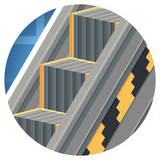
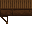

Create: Escalated
附属模组
自动扶梯：把传送带变成会走的楼梯
这是什么
两个台阶方块（金属/木质），铺在机械传送带上就变成自动扶梯。模组还带了「只靠扶梯爬 100 格」的成就。
命名空间：
escalated 1.20.1 版本：本页物品与配方直接取自该版本的 jar。扶梯台阶13
玻璃扶手escalated:glass_walkway_handrail
没有工作台/机器配方
金属梯级escalated:metal_narrow_walkway
没有工作台/机器配方
金属扶手escalated:metal_walkway_handrail
没有工作台/机器配方
金属扶梯盖板escalated:metal_walkway_terminal
没有工作台/机器配方
金属梯级escalated:metal_wide_walkway_center
没有工作台/机器配方
金属梯级escalated:metal_wide_walkway_side
没有工作台/机器配方
木制梯级escalated:wooden_narrow_walkway
没有工作台/机器配方
木制扶手escalated:wooden_walkway_handrail
没有工作台/机器配方

木制梯级escalated:wooden_walkway_steps
木制扶梯盖板escalated:wooden_walkway_terminal
没有工作台/机器配方
木制梯级escalated:wooden_wide_walkway_center
没有工作台/机器配方
木制梯级escalated:wooden_wide_walkway_side
没有工作台/机器配方
其它9
玻璃扶手escalated:glass_escalator_handrail
没有工作台/机器配方
金属扶手escalated:metal_escalator_handrail
没有工作台/机器配方
金属自动扶梯escalated:metal_narrow_escalator
没有工作台/机器配方
金属自动扶梯escalated:metal_wide_escalator_center
没有工作台/机器配方
金属自动扶梯escalated:metal_wide_escalator_side
没有工作台/机器配方
木制扶手escalated:wooden_escalator_handrail
没有工作台/机器配方
木制自动扶梯escalated:wooden_narrow_escalator
没有工作台/机器配方
木制自动扶梯escalated:wooden_wide_escalator_center
没有工作台/机器配方
木制自动扶梯escalated:wooden_wide_escalator_side
没有工作台/机器配方